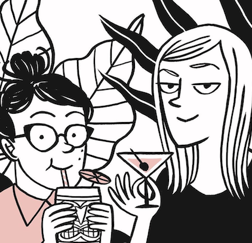

Cristina Llorente
Bio
I'm an Architect, designer and aspiring Web developer from Venezuela living in Montreal. I love music, technology, traveling, tennis, web comics and everything related to great design. ッ

|
Sarah's Scribbles
Sarah's Scribbles is a webcomic by Sarah Andersen since 2011. Andersen initially published the webcomic on Tumblr, but has since released it on various services, such as Facebook, Instagram and Line Webtoon. |

|
Hyperbole And A Half
Hyperbole and a Half draws inspiration from "rage comics," promoting a certain similarity in their shared diction and simple, almost rudimentary art.[8] A number of Brosh's images have, in turn, been repurposed into various memes and rage comic panels. |
 |
Let's Pacheco
The Pacheco sister's have published the book “Una semana en familia” (“A week with the family”) about their yearly Christmas family reunion. It’s in only available in Spanish … so far. You can find more information at the homepage of their publishing house ¡Caramba!. |